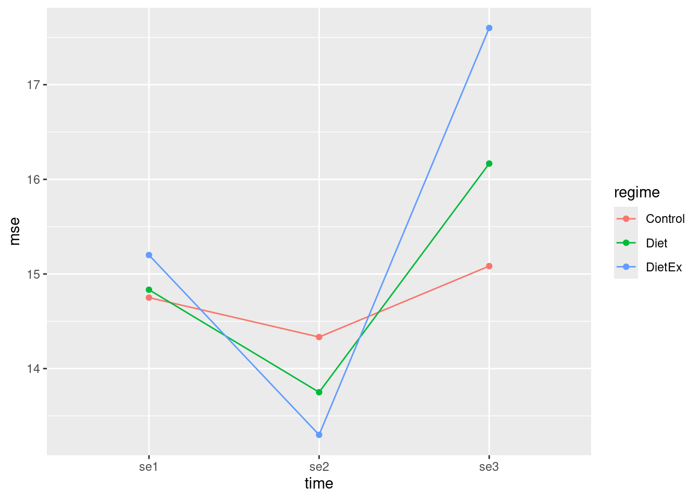

── Conflicts ────────────────────────────────────────── tidyverse_conflicts() ──
✖ dplyr::filter() masks stats::filter()
✖ dplyr::lag() masks stats::lag()
ℹ Use the conflicted package (<http://conflicted.r-lib.org/>) to force all conflicts to become errors
library(car)
Loading required package: carData
Attaching package: 'car'
The following object is masked from 'package:dplyr':
recode
The following object is masked from 'package:purrr':
some
library(MASS, exclude ="select")library(lme4)
Loading required package: Matrix
Attaching package: 'Matrix'
The following objects are masked from 'package:tidyr':
expand, pack, unpack
Rows: 34 Columns: 8
── Column specification ────────────────────────────────────────────────────────
Delimiter: ","
chr (1): regime
dbl (7): subject, wl1, wl2, wl3, se1, se2, se3
ℹ Use `spec()` to retrieve the full column specification for this data.
ℹ Specify the column types or set `show_col_types = FALSE` to quiet this message.
self_esteem
# A tibble: 34 × 8
subject regime wl1 wl2 wl3 se1 se2 se3
<dbl> <chr> <dbl> <dbl> <dbl> <dbl> <dbl> <dbl>
1 1 Control 4 3 3 14 13 15
2 2 Control 4 4 3 13 14 17
3 3 Control 4 3 1 17 12 16
4 4 Control 3 2 1 11 11 12
5 5 Control 5 3 2 16 15 14
6 6 Control 6 5 4 17 18 18
7 7 Control 6 5 4 17 16 19
8 8 Control 5 4 1 13 15 15
9 9 Control 5 4 1 14 14 15
10 10 Control 3 3 2 14 15 13
# ℹ 24 more rows
Each subject (in a row of the dataframe) produces three measurements, namely the self-esteem scores at the three times. These are the “repeated measures”. Additionally, the repeated measures analysis will be necessary because the three scores on the same subject may well be correlated:
In particular, the self-esteem score at the first time point is positively correlated with the scores at time points 2 and 3 for the same subject.
Running a suitable repeated measures analysis requires the following steps:
make response matrix
set up the time-dependence stuff
run your model as an lm first
feed that into Manova with the time-dependence stuff display the summary of this.
self_esteem %>%select(contains("se")) %>%as.matrix() -> responsehead(response, n =10)
Take my fitted multivariate linear model, use times.df to describe the repeated time structure, and run a repeated-measures MANOVA with time as the within-subject factor.
manova and Manova are different functions from different packages, even though their names look almost the same. The lowercase manova is the base R function for a standard MANOVA, where we have several response variables and want to test whether groups differ across them. The capitalized Manova, from the car package, is more flexible and is especially useful for repeated-measures MANOVA because it lets us specify the within-subject structure using arguments like idata and idesign. In this assignment, that is exactly why Manova was used: the self-esteem scores se1, se2, and se3are not just three separate outcomes, but the same outcome measured across time, so R needs extra information telling it that those columns represent repeated time points. The manova function does not handle that setup in the same direct way, while Manova does.
summary(self_esteem.2)
Type II Repeated Measures MANOVA Tests:
------------------------------------------
Term: (Intercept)
Response transformation matrix:
(Intercept)
se1 1
se2 1
se3 1
Sum of squares and products for the hypothesis:
(Intercept)
(Intercept) 68670.12
Multivariate Tests: (Intercept)
Df test stat approx F num Df den Df Pr(>F)
Pillai 1 0.98796 2543.895 1 31 < 2.22e-16 ***
Wilks 1 0.01204 2543.895 1 31 < 2.22e-16 ***
Hotelling-Lawley 1 82.06113 2543.895 1 31 < 2.22e-16 ***
Roy 1 82.06113 2543.895 1 31 < 2.22e-16 ***
---
Signif. codes: 0 '***' 0.001 '**' 0.01 '*' 0.05 '.' 0.1 ' ' 1
------------------------------------------
Term: regime
Response transformation matrix:
(Intercept)
se1 1
se2 1
se3 1
Sum of squares and products for the hypothesis:
(Intercept)
(Intercept) 21.06569
Multivariate Tests: regime
Df test stat approx F num Df den Df Pr(>F)
Pillai 2 0.0245554 0.3901908 2 31 0.68021
Wilks 2 0.9754446 0.3901908 2 31 0.68021
Hotelling-Lawley 2 0.0251736 0.3901908 2 31 0.68021
Roy 2 0.0251736 0.3901908 2 31 0.68021
------------------------------------------
Term: times
Response transformation matrix:
times1 times2
se1 1 0
se2 0 1
se3 -1 -1
Sum of squares and products for the hypothesis:
times1 times2
times1 56.94118 104.8235
times2 104.82353 192.9706
Multivariate Tests: times
Df test stat approx F num Df den Df Pr(>F)
Pillai 1 0.4899083 14.40648 2 30 4.1184e-05 ***
Wilks 1 0.5100917 14.40648 2 30 4.1184e-05 ***
Hotelling-Lawley 1 0.9604317 14.40648 2 30 4.1184e-05 ***
Roy 1 0.9604317 14.40648 2 30 4.1184e-05 ***
---
Signif. codes: 0 '***' 0.001 '**' 0.01 '*' 0.05 '.' 0.1 ' ' 1
------------------------------------------
Term: regime:times
Response transformation matrix:
times1 times2
se1 1 0
se2 0 1
se3 -1 -1
Sum of squares and products for the hypothesis:
times1 times2
times1 23.32549 40.04314
times2 40.04314 68.76275
Multivariate Tests: regime:times
Df test stat approx F num Df den Df Pr(>F)
Pillai 2 0.2574779 2.290306 4 62 0.0696268 .
Wilks 2 0.7425563 2.407105 4 60 0.0592408 .
Hotelling-Lawley 2 0.3466530 2.513235 4 58 0.0512638 .
Roy 2 0.3465199 5.371058 2 31 0.0099358 **
---
Signif. codes: 0 '***' 0.001 '**' 0.01 '*' 0.05 '.' 0.1 ' ' 1
Univariate Type II Repeated-Measures ANOVA Assuming Sphericity
Sum Sq num Df Error SS den Df F value Pr(>F)
(Intercept) 22890.0 1 278.94 31 2543.8949 < 2.2e-16 ***
regime 7.0 2 278.94 31 0.3902 0.680205
times 96.7 2 134.58 62 22.2807 5.111e-08 ***
regime:times 34.7 4 134.58 62 3.9962 0.006003 **
---
Signif. codes: 0 '***' 0.001 '**' 0.01 '*' 0.05 '.' 0.1 ' ' 1
Mauchly Tests for Sphericity
Test statistic p-value
times 0.75295 0.014173
regime:times 0.75295 0.014173
Greenhouse-Geisser and Huynh-Feldt Corrections
for Departure from Sphericity
GG eps Pr(>F[GG])
times 0.80189 7.596e-07 ***
regime:times 0.80189 0.01105 *
---
Signif. codes: 0 '***' 0.001 '**' 0.01 '*' 0.05 '.' 0.1 ' ' 1
HF eps Pr(>F[HF])
times 0.8389008 4.583464e-07
regime:times 0.8389008 9.855788e-03
We look at sphericity first, from the Mauchly tests near the bottom. We are first assessing the regime by time interaction, so we strictly need the P-value from the second test (though they are both the same). The P- value of 0.014 is smaller than 0.05, so sphericity fails and we cannot use the type II analysis for anything time-related.
The Huynh-Feldt tests at the bottom. The P-value for the interaction is 0.0099; this is also less than 0.05, so the interaction is significant: the effect of treatment regime depends on time (that is, it is not consistent over time).
For an interaction plot, you need a colour and a group , and they are the same column.
self_esteem_long %>%group_by(regime, time) %>%summarize(mse =mean(self_esteem)) %>%ggplot(aes(x = time, y = mse, colour = regime, group = regime)) +geom_point() +geom_line()
`summarise()` has grouped output by 'regime'. You can override using the
`.groups` argument.

The regimes do not compare consistently over time. For example, the diet plus exercise treatment has highest mean self-esteem at time points 1 and 3, but the lowest at time 2. Furthermore, comparing the patterns over time: the control regime only dips slightly at time 2, but both the real treatments both result in a bigger drop in self-esteem at time 2 and a much bigger increase at time 3. In some way, make the point that it is actually the combination of regime and time that predicts self-esteem.
Below is a mixed model and we show how the conclusions from it are the same as the repeated measures analysis of variance:
install.packages("Matrix")
Installing package into '/usr/local/lib/R/site-library'
(as 'lib' is unspecified)
install.packages("lme4")
Installing package into '/usr/local/lib/R/site-library'
(as 'lib' is unspecified)
library(Matrix)library(lme4)
self_esteem.3<-lmer(self_esteem ~ time * regime + (1| subject),data = self_esteem_long)
This code fits a mixed-effects model and saves it in an object called self_esteem.3. The response variable is self_esteem, so the model is trying to explain differences in self-esteem scores. On the right side of the formula, time * regime means the model includes the effect of time, the effect of regime, and also the interaction between them. That interaction checks whether the pattern of self-esteem over time is different depending on which treatment regime a subject was in. The part (1 | subject) adds a random intercept for each subject, which means the model allows each person to have their own baseline level of self-esteem rather than forcing everyone to start at exactly the same level. This is important because each subject appears multiple times in self_esteem_long, once for each time point, so the observations from the same person are not independent. Finally, data = self_esteem_long tells R to look for all these variables in the long-format dataset called self_esteem_long. So overall, this code fits a mixed model that tests whether self-esteem depends on time, regime, and their combination, while also accounting for repeated measurements on the same subjects.
In words, this says that self esteem score depends on time and regime and their combination, plus a random effect for subject. The correlation between self-esteem scores within a subject is taken care of by allowing each subject to have their own random effect that moves all their scores up (or down) across all times, like a block effect in ANOVA.
The summary of this kind of model is not very illuminating, but drop1 works just fine:
and this says that once again, the interaction is significant: the self-esteem score depends on the regime and on the time point in combination, as we concluded before.
Rows: 206 Columns: 4
── Column specification ────────────────────────────────────────────────────────
Delimiter: ","
chr (1): location
dbl (3): logwid, logpet, loglen
ℹ Use `spec()` to retrieve the full column specification for this data.
ℹ Specify the column types or set `show_col_types = FALSE` to quiet this message.
leafshape
# A tibble: 206 × 4
logwid logpet loglen location
<dbl> <dbl> <dbl> <chr>
1 0.908 -1.52 1.91 C America
2 1.14 -0.943 2.04 C America
3 0.967 -1.25 2.08 C America
4 1.33 -0.967 2.18 C America
5 1.37 -0.832 2.24 C America
6 1.41 -1.23 2.29 C America
7 1.41 -0.650 2.42 C America
8 1.65 -0.680 2.42 C America
9 1.43 -1.23 2.42 C America
10 1.39 -0.569 2.49 C America
# ℹ 196 more rows
To run a MANOVA we have to consider that we have three response variables (the quantitative ones beginning with log ) and one categorical explanatory variable ( location ). So we first have to create a response matrix
The P-value of 2.2 × 10−16 is (much) less than 0.05, so the location does have an effect on one or more of the response variables, or some combination of them.
Conclusions from MANOVA are always vague (even vaguer than from the F -test in an ANOVA), also a discriminant analysis follows in an attempt to find out what is different about the leaves from the different locations.
he categorical variable is treated as the response (even though it is actually explanatory) and the quantitative variables are treated as explanatory (even though they are really responses):
leafshape.2<-lda(location ~ loglen + logpet + logwid, data = leafshape)leafshape.2
Call:
lda(location ~ loglen + logpet + logwid, data = leafshape)
Prior probabilities of groups:
C America Queensland Tasmania
0.50970874 0.44660194 0.04368932
Group means:
loglen logpet logwid
C America 2.919594 0.2990920 1.9405839
Queensland 2.506848 -0.1043243 1.4939589
Tasmania 1.351106 -0.9574345 0.1837469
Coefficients of linear discriminants:
LD1 LD2
loglen -1.0037464 1.884861
logpet 0.8477512 1.272067
logwid -1.8403529 -2.656167
Proportion of trace:
LD1 LD2
0.9944 0.0056
Extra: you can get away without typing the names of all the quantitative variables by doing something like this:
leafshape.2a <-lda(location ~ . , data = leafshape)leafshape.2a
Call:
lda(location ~ ., data = leafshape)
Prior probabilities of groups:
C America Queensland Tasmania
0.50970874 0.44660194 0.04368932
Group means:
logwid logpet loglen
C America 1.9405839 0.2990920 2.919594
Queensland 1.4939589 -0.1043243 2.506848
Tasmania 0.1837469 -0.9574345 1.351106
Coefficients of linear discriminants:
LD1 LD2
logwid -1.8403529 -2.656167
logpet 0.8477512 1.272067
loglen -1.0037464 1.884861
Proportion of trace:
LD1 LD2
0.9944 0.0056
This works because . means “all the other variables, not including location”.
Looking at the Coefficients of Linear Discriminants. The three coefficients are of roughly similar sizes, so its important to talk about all of them. The ones for logwid and loglen are negative and the one for logpet is positive, so a leaf will have a large LD1 score if:
the width is small
the petiole length is large
the length is small
that is to say, a small leaf in overall size with a long stalk. (Note: if the log of something is large or small, the thing itself is also large or small, so we don’t need to talk about logs here. On the other hand, we do need to translate loglen etc. for the reader. Unless they were the ones that recorded the data, they won’t know what loglen etc. mean.)
How many linear discriminants will be important?
Looking at the Proportion of Trace at the bottom of the output. Almost all of it (99.4%) is explained by LD1 and almost none by LD2 (0.6%), so we would not expect LD2 to be important. (What that means is LD2 is expected to do pretty much nothing in distinguishing the groups.)
In order to obtain a dataframe that contains the original data along with discriminant scores, posterior probabilities, and predicted locations:
p <-predict(leafshape.2)leafshape_p <-cbind(leafshape, p)leafshape_p
logwid logpet loglen location class
1 0.9082586 -1.5153830657 1.9080599 C America Queensland
2 1.1442228 -0.9425833738 2.0412203 C America Queensland
3 0.9669838 -1.2485518477 2.0756845 C America Queensland
4 1.3297240 -0.9672104119 2.1770219 C America Queensland
5 1.3737156 -0.8319863488 2.2449560 C America Queensland
6 1.4134230 -1.2288120943 2.2945529 C America C America
7 1.4134230 -0.6497141976 2.4185888 C America Queensland
8 1.6524974 -0.6798361665 2.4212566 C America C America
9 1.4279160 -1.2334634089 2.4239174 C America C America
10 1.3937664 -0.5691541337 2.4948570 C America Queensland
11 1.6956156 -0.5014629243 2.5063419 C America C America
12 1.3137237 -0.7118530495 2.5120353 C America Queensland
13 1.3376292 -0.5512449216 2.5587765 C America Queensland
14 1.2947272 -1.1689274626 2.5649494 C America C America
15 1.4231083 -0.0267465204 2.6071243 C America Queensland
16 1.5851452 -0.1228469607 2.6789646 C America C America
17 1.7664417 0.2285656253 2.6796507 C America C America
18 1.8213183 -0.1390781762 2.6810215 C America C America
19 1.8594181 -0.6712761057 2.7160184 C America C America
20 1.8131947 -0.8506902748 2.7212954 C America C America
21 1.8325815 0.0867573447 2.7517481 C America C America
22 1.3987169 -0.4969753170 2.7837759 C America C America
23 1.7578579 -1.2012365513 2.8106068 C America C America
24 1.4747630 0.4494169196 2.8160073 C America Queensland
25 1.5789787 -0.6186892696 2.8390785 C America C America
26 1.5686159 0.5008771009 2.8696020 C America Queensland
27 1.8373700 0.0728340182 2.8729995 C America C America
28 1.9643112 0.0407483918 2.9285235 C America C America
29 2.1186623 0.8227358107 2.9496883 C America C America
30 1.9572739 0.2801240827 2.9595868 C America C America
31 1.8946169 0.5579721522 2.9952321 C America C America
32 1.9837563 0.1997316183 3.0081548 C America C America
33 2.1053529 -0.1222941957 3.0383127 C America C America
34 1.9643112 -0.6734308315 3.0521126 C America C America
35 2.3360199 0.2997341535 3.2954664 C America C America
36 2.1317968 0.2439292247 3.3652247 C America C America
37 2.8136107 1.2594312574 3.8117606 C America C America
38 3.7745983 3.9333930312 3.8262472 C America C America
39 2.7140323 2.5591151407 3.0407056 C America C America
40 2.6953026 2.4111558702 3.1298260 C America C America
41 2.8069901 2.4341235761 3.2557862 C America C America
42 1.9768550 1.7417621768 2.6560549 C America Queensland
43 1.7298841 1.4479184833 2.7880929 C America Queensland
44 3.2676660 2.2738800162 3.8979241 C America C America
45 2.3795461 0.9017625064 3.1855258 C America C America
46 1.5040774 0.3599194748 2.6796507 C America Queensland
47 2.4458193 1.5751083381 3.9009621 C America C America
48 1.8840347 0.2749918916 2.6246686 C America C America
49 1.6863990 0.2027930780 2.6411979 C America Queensland
50 1.9629077 0.6520751548 3.2503745 C America C America
51 1.2149127 -0.0706692759 2.6939513 C America Queensland
52 2.1792869 0.5434457548 3.3652247 C America C America
53 1.9444806 -0.2369255888 2.9096296 C America C America
54 1.5411591 -0.9302730302 2.4570214 C America C America
55 1.5432981 -1.2342876923 2.5733753 C America C America
56 1.1969482 -0.7384479398 2.0502702 C America Queensland
57 0.9631743 -1.2640979676 2.3331143 C America Queensland
58 1.5475625 0.0457226069 2.4230312 C America Queensland
59 1.0367369 -0.6308261162 2.4570214 C America Queensland
60 1.3217558 -0.5320799042 2.5937611 C America Queensland
61 1.5933085 -0.9769169162 2.6461748 C America C America
62 1.7209793 -0.5777135693 2.6461748 C America C America
63 1.6677068 -0.3182320057 2.6518325 C America C America
64 1.7595806 0.2940820488 2.7087166 C America C America
65 1.7526721 -0.1548776106 2.7788193 C America C America
66 1.5644405 -0.4737610796 2.8069901 C America C America
67 1.8389611 -0.4431155747 2.8088001 C America C America
68 1.5303947 0.5382322087 2.8249440 C America Queensland
69 2.0756845 0.4434773991 2.8338014 C America C America
70 1.8213183 -0.6717849857 2.8825636 C America C America
71 2.0856721 0.4829815505 2.8909272 C America C America
72 1.8825138 0.0858290116 2.8959119 C America C America
73 1.7191888 -0.0255321899 2.9290581 C America C America
74 1.7850705 -0.2802100576 2.9311938 C America C America
75 1.9919755 0.9151340632 2.9826470 C America C America
76 1.8421357 -0.2907267026 3.0007198 C America C America
77 2.0967902 0.0662370778 3.0037004 C America C America
78 2.3035846 0.8259142812 3.0116056 C America C America
79 2.3311725 1.0267653482 3.0130809 C America C America
80 1.5665304 0.0600032523 3.0165148 C America C America
81 2.0135688 0.2422039424 3.1210425 C America C America
82 2.1972246 0.2855472954 3.1311369 C America C America
83 2.1246539 -0.3536794350 3.1696856 C America C America
84 2.2343063 0.2482801629 3.1726224 C America C America
85 2.3599102 0.6984232377 3.2068032 C America C America
86 2.1471002 -0.0963347045 3.2733640 C America C America
87 1.9892433 0.1544192152 3.3364811 C America C America
88 2.1994443 0.4505226002 3.4031954 C America C America
89 2.7625384 1.9123654795 3.3453322 C America C America
90 1.9740810 1.2233085579 2.8524391 C America Queensland
91 1.6900958 0.3798983803 2.8724341 C America C America
92 1.4158532 0.0079681696 2.8903718 C America Queensland
93 2.2343063 2.5042883552 2.9554310 C America Queensland
94 2.3155013 0.6685501384 3.0046920 C America C America
95 1.9796212 1.0385395146 3.0454744 C America C America
96 2.5718486 2.1506024613 3.1108451 C America C America
97 2.6093342 2.5381132377 3.2910104 C America C America
98 2.3164880 0.8764682377 3.4275147 C America C America
99 3.6005945 3.2160718975 3.4641722 C America C America
100 2.3978953 1.6958797940 3.4916473 C America C America
101 2.3551775 1.0518490689 3.5052571 C America C America
102 2.7549338 0.9682598378 3.6433589 C America C America
103 3.8323302 3.8893683149 3.8416005 C America C America
104 2.7600099 1.2163911762 3.8488702 C America C America
105 3.0252911 0.8726021326 4.2808241 C America C America
106 1.1314021 -0.8005898624 1.9358598 Queensland Queensland
107 0.9162907 -1.3404800490 1.9837563 Queensland Queensland
108 1.0919233 -0.2665300292 2.0055259 Queensland Queensland
109 1.1184149 -0.5228982050 2.0794415 Queensland Queensland
110 1.1085626 -0.7074489653 2.0893919 Queensland Queensland
111 1.4655675 -0.1994660880 2.1377104 Queensland Queensland
112 1.5727739 -0.5135894396 2.1471002 Queensland Queensland
113 1.5851452 -0.5274632649 2.1656192 Queensland Queensland
114 1.1019401 -0.6523418620 2.2141181 Queensland Queensland
115 1.3962447 -0.1128962806 2.2357328 Queensland Queensland
116 1.1755733 -1.4277665670 2.2491843 Queensland Queensland
117 1.0438041 -0.4160610473 2.2575877 Queensland Queensland
118 1.2149127 0.2307243444 2.3085672 Queensland Queensland
119 1.3323660 -0.5065116092 2.3085672 Queensland Queensland
120 1.3137237 -0.2949061030 2.3135250 Queensland Queensland
121 1.2470323 -1.2694006096 2.3389170 Queensland Queensland
122 1.3837912 -0.7140930211 2.3456446 Queensland Queensland
123 1.2029723 -2.3050882232 2.3513753 Queensland C America
124 1.6409366 0.0001399902 2.3561259 Queensland Queensland
125 1.3887912 -0.1650397512 2.3860067 Queensland Queensland
126 1.5368672 0.0989834252 2.4176979 Queensland Queensland
127 1.2864740 -0.1381133021 2.4561642 Queensland Queensland
128 1.4655675 -0.1551438395 2.4731714 Queensland Queensland
129 1.4134230 -0.9507062087 2.5038919 Queensland C America
130 1.4724721 -0.1167450745 2.5525653 Queensland Queensland
131 1.4303112 -1.3060055299 2.5572273 Queensland C America
132 1.3937664 -0.8785904047 2.5618677 Queensland C America
133 1.1908876 -1.2460551414 2.5672544 Queensland C America
134 1.7209793 0.3907033542 2.5952547 Queensland Queensland
135 1.4678743 -0.1568035850 2.5962492 Queensland Queensland
136 1.7298841 -0.0308237069 2.6093342 Queensland C America
137 1.4492692 -0.6004731997 2.6644466 Queensland C America
138 1.3800247 -0.7969089749 2.6672282 Queensland C America
139 1.1151416 0.0471507258 2.6810215 Queensland Queensland
140 1.5195132 -0.0712275093 2.7013612 Queensland Queensland
141 2.0294632 0.1868272243 2.8027541 Queensland C America
142 1.7369512 -0.3588587553 2.8136107 Queensland C America
143 1.9257074 0.1480509715 2.8355635 Queensland C America
144 2.0554050 0.1650906199 2.9902171 Queensland C America
145 1.9401795 0.1859815176 3.1958119 Queensland C America
146 1.9139771 0.5059904531 3.4127965 Queensland C America
147 1.3609766 0.4120036849 2.6376277 Queensland Queensland
148 1.7439688 1.0592544995 2.6706944 Queensland Queensland
149 1.0986123 -0.1740260598 2.7245795 Queensland Queensland
150 1.7715568 0.6282085794 2.7278528 Queensland Queensland
151 1.5769147 0.5905189289 2.7309852 Queensland Queensland
152 1.7664417 0.6113035188 2.7382560 Queensland Queensland
153 1.5518088 0.0386513203 2.7447035 Queensland Queensland
154 1.9768550 -0.8799588026 2.8332133 Queensland C America
155 1.6639261 0.4419384610 2.8791985 Queensland C America
156 1.8164521 1.2588079465 2.8887037 Queensland Queensland
157 1.9726912 0.6291418506 2.9317269 Queensland C America
158 2.0992442 1.8859781445 2.9796029 Queensland Queensland
159 1.8840347 1.1843874574 3.0435696 Queensland C America
160 2.4388627 2.3489315595 3.1007677 Queensland C America
161 1.3350011 -0.1334902506 3.1197183 Queensland C America
162 1.9242487 1.2904839312 3.2298158 Queensland C America
163 1.7783364 0.9689163883 3.2790297 Queensland C America
164 2.1435894 1.3443348058 3.2955590 Queensland C America
165 2.2523439 1.3348413956 3.5791576 Queensland C America
166 3.1548705 0.4017390081 3.7441959 Queensland C America
167 -0.6069695 -2.6712288786 -0.1560692 Queensland Tasmania
168 -0.2319321 -2.0450323855 0.7323679 Queensland Tasmania
169 1.1631508 -0.8386586197 1.8277699 Queensland Queensland
170 1.0508216 -1.3871747485 1.9315214 Queensland Queensland
171 1.1817272 -1.0785155870 1.9685100 Queensland Queensland
172 1.3912819 -0.4117724577 2.0831845 Queensland Queensland
173 1.2029723 -0.6218912717 2.0992442 Queensland Queensland
174 0.9783261 -1.2788005226 2.1294215 Queensland Queensland
175 1.2354715 -0.3827314863 2.2679936 Queensland Queensland
176 1.4996230 0.0382587121 2.4046903 Queensland Queensland
177 1.5454326 -0.2868810600 2.4327358 Queensland Queensland
178 1.2296406 -0.5118961966 2.4388627 Queensland Queensland
179 1.6253113 -0.3235939193 2.4782177 Queensland C America
180 0.4317824 -1.1523928844 1.4445633 Queensland Queensland
181 1.0750024 -0.1170912750 1.9768550 Queensland Queensland
182 1.1151416 -1.2561155822 2.1077860 Queensland Queensland
183 1.3862944 -0.0030747221 2.2554935 Queensland Queensland
184 1.0750024 -0.2548535407 2.2721259 Queensland Queensland
185 1.1969482 -0.0977164726 2.3035846 Queensland Queensland
186 1.2725656 -0.0503043099 2.3795461 Queensland Queensland
187 1.6174061 1.1153553383 2.4388627 Queensland Queensland
188 1.8991180 1.7559593924 2.4740142 Queensland Queensland
189 1.1151416 -0.6391363819 2.4798941 Queensland Queensland
190 1.2119410 -0.4095084615 2.5160823 Queensland Queensland
191 1.3962447 -0.3188012915 2.5336968 Queensland Queensland
192 1.1878434 -0.1001319861 2.5400259 Queensland Queensland
193 1.4586150 0.1834142929 2.6275630 Queensland Queensland
194 1.2441546 -0.4182646742 2.8284964 Queensland Queensland
195 3.1633631 3.0610517397 3.0864866 Queensland C America
196 2.9957323 -0.1560691856 3.3843903 Queensland C America
197 3.4200191 3.4071794533 3.5978601 Queensland C America
198 -0.1165338 -1.8414464607 0.1392653 Tasmania Tasmania
199 1.0116009 -0.7305187326 1.7972996 Tasmania Queensland
200 0.4121097 -0.7156644194 1.3334963 Tasmania Tasmania
201 0.7561220 -0.5034263163 1.5994886 Tasmania Queensland
202 1.3164082 0.3415967282 2.8122100 Tasmania Queensland
203 0.1484200 -0.9249892546 1.4177930 Tasmania Tasmania
204 0.9360934 0.1414735203 2.5572273 Tasmania Queensland
205 -0.8794768 -2.0079728597 0.1145182 Tasmania Tasmania
206 -1.9310215 -2.3759625628 0.3886580 Tasmania Tasmania
posterior.C America posterior.Queensland posterior.Tasmania x.LD1
1 2.987910e-01 6.978126e-01 3.396419e-03 0.814071880
2 3.226232e-01 6.745736e-01 2.803262e-03 0.731746745
3 3.195753e-01 6.772406e-01 3.184114e-03 0.763950556
4 4.204811e-01 5.789701e-01 5.487660e-04 0.233171145
5 4.327412e-01 5.667522e-01 5.065979e-04 0.198658874
6 5.216177e-01 4.782790e-01 1.033435e-04 -0.260609093
7 4.650667e-01 5.345287e-01 4.046396e-04 0.105821301
8 5.521208e-01 4.478019e-01 7.730790e-05 -0.362373704
9 5.624221e-01 4.375154e-01 6.249806e-05 -0.421073604
10 4.666107e-01 5.329233e-01 4.659671e-04 0.133737427
11 5.621620e-01 4.377609e-01 7.713888e-05 -0.375914365
12 4.662345e-01 5.332804e-01 4.851304e-04 0.142828390
13 4.620957e-01 5.373200e-01 5.842848e-04 0.188073234
14 5.456009e-01 4.542805e-01 1.185601e-04 -0.262808996
15 4.228509e-01 5.757625e-01 1.386665e-03 0.426876666
16 5.127428e-01 4.869612e-01 2.959181e-04 -0.024907131
17 5.200235e-01 4.797156e-01 2.609020e-04 -0.061334808
18 5.955000e-01 4.044407e-01 5.926240e-05 -0.475373543
19 6.920624e-01 3.079297e-01 7.928017e-06 -1.031790085
20 7.035898e-01 2.964041e-01 6.083496e-06 -1.104118177
21 5.838149e-01 4.160970e-01 8.814854e-05 -0.375640958
22 5.361134e-01 4.636510e-01 2.356118e-04 -0.104184905
23 7.513110e-01 2.486868e-01 2.203651e-06 -1.389100853
24 4.229673e-01 5.748210e-01 2.211655e-03 0.525816338
25 6.290574e-01 3.709010e-01 4.157706e-05 -0.594623163
26 4.615420e-01 5.372520e-01 1.206018e-03 0.342923853
27 6.192950e-01 3.806489e-01 5.612215e-05 -0.517962742
28 6.772289e-01 3.227529e-01 1.820678e-05 -0.834512107
29 6.193102e-01 3.806217e-01 6.806859e-05 -0.476885801
30 6.492783e-01 3.506854e-01 3.636118e-05 -0.649809595
31 5.975984e-01 4.022854e-01 1.161934e-04 -0.334731338
32 6.803831e-01 3.195966e-01 2.031506e-05 -0.815449256
33 7.606146e-01 2.393824e-01 2.929874e-06 -1.342498648
34 7.896220e-01 2.103768e-01 1.283844e-06 -1.564010485
35 8.159906e-01 1.840084e-01 9.755019e-07 -1.667349306
36 7.894215e-01 2.105759e-01 2.656166e-06 -1.408835062
37 8.917064e-01 1.082934e-01 1.330977e-07 -2.250929018
38 8.541522e-01 1.458470e-01 8.594571e-07 -1.767172074
39 5.781649e-01 4.216332e-01 2.018346e-04 -0.191917411
40 6.177164e-01 3.821735e-01 1.101376e-04 -0.372335150
41 6.805598e-01 3.194026e-01 3.755326e-05 -0.684840771
42 3.514421e-01 6.421831e-01 6.374814e-03 0.857928864
43 3.484330e-01 6.427579e-01 8.809156e-03 0.930803451
44 8.993211e-01 1.006788e-01 1.093683e-07 -2.313037165
45 7.412331e-01 2.587599e-01 7.041109e-06 -1.126730284
46 4.100735e-01 5.878326e-01 2.093922e-03 0.532863415
47 8.184492e-01 1.815472e-01 3.560273e-06 -1.395983013
48 5.378988e-01 4.619368e-01 1.643521e-04 -0.183201543
49 4.860887e-01 5.134552e-01 4.560493e-04 0.102720207
50 6.703202e-01 3.296357e-01 4.411148e-05 -0.636732914
51 3.830567e-01 6.133815e-01 3.561759e-03 0.685642179
52 7.683902e-01 2.316048e-01 4.960513e-06 -1.242318122
53 7.040710e-01 2.959197e-01 9.297349e-06 -1.014450373
54 5.628311e-01 4.371016e-01 6.735144e-05 -0.405678843
55 6.394663e-01 3.605155e-01 1.820939e-05 -0.784133975
56 3.125353e-01 6.839223e-01 3.542351e-03 0.798685737
57 3.853156e-01 6.131802e-01 1.504218e-03 0.499387955
58 4.042882e-01 5.943875e-01 1.324349e-03 0.444055571
59 3.474176e-01 6.483786e-01 4.203803e-03 0.776492479
60 4.632326e-01 5.361495e-01 6.179165e-04 0.198417342
61 6.365340e-01 3.634431e-01 2.294338e-05 -0.731056653
62 6.190431e-01 3.809235e-01 3.348884e-05 -0.627590794
63 5.637973e-01 4.360991e-01 1.035924e-04 -0.315253771
64 5.153883e-01 4.843072e-01 3.044727e-04 -0.022341165
65 6.010521e-01 3.988822e-01 6.571032e-05 -0.460598446
66 5.944830e-01 4.054380e-01 7.901397e-05 -0.412796246
67 6.771845e-01 3.228017e-01 1.377580e-05 -0.893847868
68 4.304900e-01 5.675471e-01 1.962898e-03 0.489757560
69 6.313353e-01 3.686242e-01 4.054060e-05 -0.602987233
70 7.191817e-01 2.808123e-01 5.991338e-06 -1.129273473
71 6.432500e-01 3.567142e-01 3.578875e-05 -0.645218016
72 6.376762e-01 3.622836e-01 4.021745e-05 -0.613025110
73 6.101090e-01 3.898146e-01 7.645957e-05 -0.440126336
74 6.680603e-01 3.319175e-01 2.225299e-05 -0.779419001
75 5.723666e-01 4.274445e-01 1.888954e-04 -0.198488938
76 7.027005e-01 2.972878e-01 1.172462e-05 -0.963141133
77 7.288198e-01 2.711739e-01 6.305470e-06 -1.132170619
78 6.911310e-01 3.088527e-01 1.632608e-05 -0.876662869
79 6.724404e-01 3.275343e-01 2.522104e-05 -0.758643532
80 5.698159e-01 4.299759e-01 2.082064e-04 -0.174452615
81 7.095937e-01 2.903931e-01 1.319354e-05 -0.947619417
82 7.555665e-01 2.444293e-01 4.182942e-06 -1.258998753
83 8.131917e-01 1.868075e-01 7.948156e-07 -1.706041372
84 7.769444e-01 2.230531e-01 2.514054e-06 -1.400476328
85 7.642076e-01 2.357884e-01 3.950761e-06 -1.284331379
86 8.106663e-01 1.893326e-01 1.095676e-06 -1.633253045
87 7.596865e-01 2.403077e-01 5.857975e-06 -1.193517193
88 7.902529e-01 2.097443e-01 2.835193e-06 -1.396303588
89 7.539312e-01 2.460614e-01 7.392908e-06 -1.135236428
90 4.827099e-01 5.164917e-01 7.983676e-04 0.226394271
91 5.230063e-01 4.766151e-01 3.785538e-04 0.013955444
92 4.921379e-01 5.071634e-01 6.987060e-04 0.185349531
93 3.994902e-01 5.955718e-01 4.938001e-03 0.730062435
94 7.135046e-01 2.864860e-01 9.411412e-06 -1.025059978
95 5.661616e-01 4.335924e-01 2.459958e-04 -0.134198238
96 6.113626e-01 3.885180e-01 1.193347e-04 -0.346968555
97 6.128655e-01 3.869602e-01 1.742893e-04 -0.268282968
98 7.767805e-01 2.232150e-01 4.525432e-06 -1.275019734
99 8.293796e-01 1.706194e-01 9.756371e-07 -1.691622011
100 7.143377e-01 2.856344e-01 2.793124e-05 -0.794553593
101 7.816784e-01 2.183169e-01 4.681975e-06 -1.275576458
102 8.834527e-01 1.165472e-01 1.391161e-07 -2.220751169
103 8.688469e-01 1.311526e-01 4.726013e-07 -1.926151996
104 8.911493e-01 1.088505e-01 1.486021e-07 -2.226020623
105 9.590306e-01 4.096935e-02 1.645016e-09 -3.439251309
106 2.753430e-01 7.185547e-01 6.102324e-03 0.981471741
107 2.953064e-01 7.003677e-01 4.325909e-03 0.871584135
108 2.128645e-01 7.584005e-01 2.873494e-02 1.436949500
109 2.676216e-01 7.225542e-01 9.824261e-03 1.096666554
110 2.913138e-01 7.026760e-01 6.010193e-03 0.948357523
111 3.406182e-01 6.569281e-01 2.453679e-03 0.673485959
112 4.244475e-01 5.750691e-01 4.833345e-04 0.200465012
113 4.357184e-01 5.638756e-01 4.060150e-04 0.147347490
114 3.111079e-01 6.836998e-01 5.192272e-03 0.882068972
115 3.309568e-01 6.653511e-01 3.692108e-03 0.776064595
116 4.589872e-01 5.407078e-01 3.049774e-04 0.053992979
117 2.719425e-01 7.151306e-01 1.292696e-02 1.145734613
118 2.470883e-01 7.284442e-01 2.446748e-02 1.327976887
119 3.864349e-01 6.121359e-01 1.429200e-03 0.486828757
120 3.505138e-01 6.465494e-01 2.936721e-03 0.695549637
121 4.831879e-01 5.165759e-01 2.362796e-04 -0.033330686
122 4.451490e-01 5.543496e-01 5.013741e-04 0.178994506
123 6.303198e-01 3.696671e-01 1.306904e-05 -0.842755064
124 4.246093e-01 5.746156e-01 7.751643e-04 0.300727649
125 3.740590e-01 6.237672e-01 2.173811e-03 0.594739951
126 3.912858e-01 6.070313e-01 1.682897e-03 0.514243926
127 3.550417e-01 6.412897e-01 3.668646e-03 0.735446350
128 4.209297e-01 5.780013e-01 1.068986e-03 0.374342488
129 5.354374e-01 4.644356e-01 1.269439e-04 -0.234967792
130 4.387274e-01 5.603639e-01 9.087194e-04 0.314496997
131 6.096048e-01 3.903625e-01 3.263347e-05 -0.620788670
132 5.333262e-01 4.665232e-01 1.505765e-04 -0.195849296
133 5.228639e-01 4.769521e-01 1.840120e-04 -0.139406230
134 4.559769e-01 5.432910e-01 7.321567e-04 0.244496657
135 4.552528e-01 5.440162e-01 7.309639e-04 0.245151184
136 5.288033e-01 4.710094e-01 1.873654e-04 -0.143373612
137 5.369127e-01 4.629095e-01 1.777856e-04 -0.165182991
138 5.446458e-01 4.552011e-01 1.531387e-04 -0.207069559
139 3.296914e-01 6.605967e-01 9.711899e-03 0.982116547
140 4.882933e-01 5.112117e-01 4.949233e-04 0.117158892
141 6.459130e-01 3.540594e-01 2.756549e-05 -0.704335595
142 6.350548e-01 3.649103e-01 3.494348e-05 -0.639513561
143 6.270020e-01 3.729538e-01 4.413938e-05 -0.579193349
144 7.017231e-01 2.982650e-01 1.189730e-05 -0.958670144
145 7.130155e-01 2.869702e-01 1.430029e-05 -0.935269324
146 7.133956e-01 2.865813e-01 2.311240e-05 -0.833557298
147 3.441818e-01 6.490412e-01 6.777041e-03 0.882554345
148 3.811374e-01 6.152214e-01 3.641210e-03 0.693230521
149 3.682585e-01 6.267129e-01 5.028649e-03 0.781312255
150 4.723823e-01 5.268935e-01 7.242026e-04 0.219666704
151 4.128543e-01 5.849093e-01 2.236414e-03 0.542781229
152 4.761264e-01 5.231835e-01 6.900677e-04 0.204306820
153 4.940358e-01 5.054741e-01 4.901007e-04 0.107368825
154 7.736594e-01 2.263393e-01 1.259784e-06 -1.542460342
155 5.061692e-01 4.933006e-01 5.302197e-04 0.107921770
156 4.330270e-01 5.647747e-01 2.198259e-03 0.510181349
157 5.958574e-01 4.040377e-01 1.048513e-04 -0.354338319
158 4.564890e-01 5.417508e-01 1.760181e-03 0.430188649
159 5.103504e-01 4.889302e-01 7.193898e-04 0.167269250
160 5.338030e-01 4.656553e-01 5.417192e-04 0.076021203
161 5.493568e-01 4.502564e-01 3.868119e-04 -0.015981335
162 5.583755e-01 4.411915e-01 4.329908e-04 -0.003739032
163 5.719939e-01 4.276401e-01 3.660030e-04 -0.057216704
164 6.395796e-01 3.603232e-01 9.714046e-05 -0.427740789
165 7.386496e-01 2.613322e-01 1.820735e-05 -0.920596528
166 9.542062e-01 4.579384e-02 9.083564e-10 -3.538259293
167 5.015130e-05 4.330689e-03 9.956192e-01 4.694618716
168 2.048952e-03 5.921618e-02 9.387349e-01 3.643510803
169 2.652842e-01 7.286634e-01 6.052435e-03 0.999264950
170 3.294855e-01 6.686216e-01 1.892932e-03 0.636844898
171 3.354155e-01 6.627486e-01 1.835825e-03 0.620471476
172 3.342181e-01 6.633177e-01 2.464280e-03 0.684944973
173 3.099992e-01 6.858386e-01 4.162250e-03 0.837252813
174 3.404417e-01 6.572207e-01 2.337627e-03 0.663495113
175 3.272741e-01 6.685002e-01 4.225695e-03 0.810809187
176 3.847611e-01 6.133872e-01 1.851695e-03 0.544363217
177 4.574047e-01 5.421072e-01 4.881112e-04 0.156269346
178 3.875986e-01 6.105457e-01 1.855647e-03 0.540531398
179 5.029024e-01 4.968698e-01 2.278231e-04 -0.067511261
180 6.118881e-02 5.713690e-01 3.674422e-01 2.463914592
181 1.849231e-01 7.638659e-01 5.121103e-02 1.623555086
182 3.751054e-01 6.237726e-01 1.122032e-03 0.452654066
183 3.172585e-01 6.776409e-01 5.100609e-03 0.867643306
184 2.628500e-01 7.209667e-01 1.618328e-02 1.210389831
185 2.846575e-01 7.043530e-01 1.098953e-02 1.087603154
186 3.189796e-01 6.746264e-01 6.394020e-03 0.912388035
187 2.757059e-01 7.063781e-01 1.791607e-02 1.206410385
188 2.804235e-01 7.018047e-01 1.777179e-02 1.195750714
189 3.798236e-01 6.178291e-01 2.347310e-03 0.602196760
190 3.865957e-01 6.111600e-01 2.244234e-03 0.582395340
191 4.390796e-01 5.600599e-01 8.605807e-04 0.302428027
192 3.391465e-01 6.548574e-01 5.996069e-03 0.864984229
193 4.079818e-01 5.900831e-01 1.935111e-03 0.519180668
194 4.830829e-01 5.162032e-01 7.138779e-04 0.202103310
195 6.607230e-01 3.392359e-01 4.103365e-05 -0.639279904
196 9.412312e-01 5.876882e-02 1.584551e-09 -3.357117757
197 7.959785e-01 2.040175e-01 4.018383e-06 -1.331476604
198 3.056963e-04 1.640636e-02 9.832879e-01 4.199052109
199 2.063535e-01 7.713495e-01 2.229708e-02 1.400430431
200 1.699395e-02 2.418479e-01 7.411582e-01 2.981839616
201 8.706667e-02 6.605345e-01 2.523988e-01 2.261671784
202 3.852437e-01 6.103014e-01 4.454896e-03 0.729651870
203 8.014873e-03 1.308683e-01 8.611168e-01 3.205053663
204 2.306774e-01 7.171749e-01 5.214767e-02 1.515848742
205 2.059542e-06 2.904800e-04 9.997075e-01 5.486803284
206 9.661649e-09 3.377301e-06 9.999966e-01 6.834886216
x.LD2
1 -1.430767797
2 -1.077899825
3 -0.931375818
4 -1.345982308
5 -1.162770861
6 -1.679546128
7 -0.709104477
8 -1.377414601
9 -1.480124792
10 -0.410660368
11 -1.104667090
12 -0.347197381
13 -0.118289517
14 -0.778433222
15 0.412989569
16 -0.004244664
17 -0.037484717
18 -0.648329970
19 -1.360556823
20 -1.456060173
21 -0.257659314
22 0.212578474
23 -1.586655206
24 1.275213407
25 -0.316817768
26 1.192403650
27 -0.059547733
28 -0.332884958
29 0.291766102
30 0.048859289
31 0.635914738
32 -0.032203108
33 -0.707979030
34 -1.008420638
35 -0.299121729
36 0.303825998
37 0.626258823
38 1.502479098
39 1.090709737
40 1.120224160
41 1.090197267
42 1.284035092
43 1.815115389
44 0.873065129
45 0.143863010
46 0.826489526
47 2.172869113
48 -0.394407937
49 0.069859454
50 1.055135858
51 1.073775942
52 0.558689460
53 -0.669043752
54 -1.332842169
55 -1.505940062
56 -0.941215628
57 -0.455813479
58 -0.172385643
59 0.387904024
60 0.014192951
61 -1.174166297
62 -1.005467731
63 -0.523225182
64 0.118865977
65 -0.301757039
66 -0.154325611
67 -0.841103353
68 1.257269594
69 -0.294950625
70 -0.946090096
71 -0.163553344
72 -0.119740109
73 0.234895590
74 -0.260039228
75 0.807926583
76 -0.293944865
77 -0.510649846
78 -0.078669850
79 0.106328670
80 0.914032179
81 0.155415064
82 -0.258243106
83 -0.805963624
84 -0.325950083
85 -0.022536818
86 -0.342805616
87 0.514431397
88 0.458512806
89 0.713339142
90 1.002052167
91 0.721177732
92 1.010301941
93 2.134468024
94 -0.323531595
95 1.116142468
96 1.080920931
97 1.813879041
98 0.735295195
99 0.369720652
100 1.682291331
101 1.002158994
102 0.094311298
103 1.322069967
104 0.783827958
105 0.456047169
106 -1.061810549
107 -1.086937118
108 -0.146277514
109 -0.403440428
110 -0.593277041
111 -0.804279705
112 -1.470925406
113 -1.486528237
114 -0.270495026
115 -0.325265654
116 -1.386374507
117 0.266423256
118 0.730773508
119 -0.519015603
120 -0.190977116
121 -1.205595695
122 -0.849781275
123 -2.382547075
124 -0.604494254
125 -0.088552584
126 -0.086278448
127 0.349708361
128 -0.115601711
129 -0.931201897
130 0.064550992
131 -1.327494673
132 -0.677978212
133 -0.596384795
134 0.130446280
135 0.108144253
136 -0.402879061
137 -0.278272266
138 -0.338984007
139 1.464288974
140 0.277962797
141 -0.557175085
142 -0.453900552
143 -0.269067402
144 -0.300389695
145 0.419760613
146 1.305417112
147 1.193636413
148 1.062017510
149 1.308942566
150 0.548155608
151 1.023117668
152 0.559846409
153 0.413647747
154 -1.717050883
155 0.882357971
156 1.534252302
157 0.399370474
158 1.752244119
159 1.551974238
160 1.667447150
161 1.477400201
162 1.931169268
163 2.002442480
164 1.540982538
165 1.774579817
166 -1.498576327
167 -2.766977941
168 -1.291996024
169 -1.398300819
170 -1.602127912
171 -1.487481531
172 -0.979806337
173 -0.716639611
174 -0.898694424
175 -0.180666295
176 -0.089115090
177 -0.571530687
178 -0.007420203
179 -0.744676016
180 -0.577046259
181 0.034722623
182 -1.274022232
183 -0.121889292
184 0.416024333
185 0.351300166
186 0.353936065
187 1.032582839
188 1.165455933
189 0.212188585
190 0.315384998
191 -0.025569910
192 0.818070254
193 0.624540561
194 0.807538759
195 0.621999744
196 -2.463631517
197 1.344443744
198 -2.457453814
199 -0.915630063
200 -0.178590054
201 -0.321004723
202 1.551518210
203 0.414426161
204 1.826521077
205 -0.689427508
206 2.152258959
with(leafshape_p, table(location, class))
class
location C America Queensland Tasmania
C America 79 26 0
Queensland 29 61 2
Tasmania 0 4 5
Most of the leaves have been classified correctly, but there are still a lot that are wrong. For example, the Central America and Queensland leaves are sometimes confused with each other, and only just over half of the leaves actually from Tasmania (bottom row) were actually classified as Tasmania.
In order to plot the discriminant scores against each other with the points labelled by where each leaf actually came from we have to do the following:
Does your plot (Question 17) tell a similar story to your misclassification table (Question 16)? Explain briefly:
Somewhat as its supported by the red points (Central America) being mostly on the left, the green ones (Queensland) being mostly in the middle, and the blue ones (Tasmania) being mostly on the right. But there is a lot of overlap, especially between Central America and Queensland (red and green), and some of the Queensland points (green) are far enough right that they look as if they came from Tasmania.
How does your plot of Question 17 support your conclusion of Question 13? Explain briefly.
In Question 13 we said that only LD1 was important, meaning that only LD1 distinguishes the locations in any meaningful way. On the plot of Question 17, the locations are only distinguished left and right (in the
LD1 direction) and not at all up and down (LD2 direction). So it is indeed true that only LD1 is important in distinguishing the locations.
Find the leaf in row 105 (of your dataframe with LD scores and posterior probabilities). Is this leaf classified correctly? Find this leaf on your graph of Question 17, and explain why its posterior probabilities make sense.
This is one of the three leftmost points on the graph, and the only one with positive LD2 score, so it is the point towards the top left, in with the ones from Central America.
posterior.C America posterior.Queensland posterior.Tasmania
105 0.9590306 0.04096935 1.645016e-09
96% Central America, 4% Queensland, 0% Tasmania. Since the leaf is in the Central America part of the graph (on the left), it is no surprise that it is overwhelmingly likely to have been from Central America (and actually was).